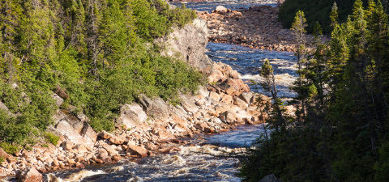
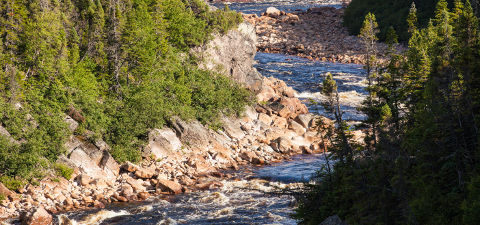

Salmon by the Sea - 2 Days, 3 Nights (Labrador)
 

Cast your lines on two of the provinces best producing Atlantic Salmon rivers. Enjoy a two day, three night salmon angling experience like no other, with a locally-guided Atlantic Salmon and sea run trout fishing tour on the Forteau & Pinware Rivers.
Salmon by the Sea
Our local guides know these rivers best. We will take you to the best fishing locations on the rivers to give you the best opportunity to catch a salmon.
Dine on the river with a traditional "Boil Up" style meal of fresh salmon cooked on the open fire, and relax at our Sea View cottages and share your grand yarns of the ones that didn't get away.
Summer season: (June 15 - August 31)
Package includes:
- 3 nights cottage stay
- 2 days guided salmon fishing
- 2 traditional "Boil-Up" meals
NOTICE: Package does not include license.
For further information: Contact us
Price: $499.00 / person - CAD

Ice fishing for lake trout in the Rocky Mountains

Enjoy the winter wonderland of the Canadian Rocky Mountains on these ice fishing tours near Banff, Alberta. Set high in the snow covered Rocky Mountains, the air is clean and, Spray Lakes, with vast expanses of untracked snow, is not crowded. Located in the heart of the Canadian Rockies, amidst some of the most breathtaking scenery in the world, this is a truly unique winter experience.
Private, family oriented ice fishing trips are available in the splendor of exceptional winter Rocky Mountain scenery. Lake trout and rocky mountain whitefish are caught using a vertical jigging technique. Vertical jigging is an easy way for the novice and expert alike to catch fish.
Even if the weather is unusually cold you will be comfortable in heated ice fishing huts. Alternatively, if the days are sunny and warm, you will be invited to try some outdoor holes too. The highlight of the tour will be when your guide cooks your catch for a delicious on site lunch.
Ice fishing is a unique winter wilderness experience, and with the benefit of heated huts and tents, is actually quite luxurious, and absolutely, lots of fun.
Package includes:
- Fishing gear and tackle, heated icefishing huts. If needed, winter boots, hats, and gloves.
- Accommodations are not included in price.
- Hot beverages provided and freshly caught fish cooked right out on the ice.
NOTICE: Package does not include license.
For further information: Contact us
Price: $500.00 / person - CAD
Ice fishing day tours near Edmonton (Alberta)
Spend a sunny winter day ice fishing on one these day tours near Edmonton, Alberta. Ice fishing is a unique angling experience and a great way to enjoy the solitude and beauty of an Alberta lake in the winter. You can enjoy a sun-filled northern day out on a lake, enjoying the winter wonderland and reeling in the catch of the day. Ice fishing offers the opportunity to catch some big fish and you have your choice of lakes including Baptiste, Long Island, North Buck or Calling Lake for pike, walleye, whitefish, burbot or perch. All fishing trips are within two to three hours of Edmonton, making this an easy day trip.
The use of an underwater camera adds some modern technology to this traditional method of fishing. You can actually watch the fish approach and strike the hook before reeling it up. Watching the behaviour of the fish is almost as much fun as catching them!
From 2 to 10 plus guests, your guides can make your ice fishing experience unforgettable. On these tours you will target Walleye (Pickerel), Pike, Perch, Burbot, Whitefish, or Rainbow Trout. Ice fishing can be great for large groups such as corporations, employees, customer appreciation events, Christmas parties, and other special occasions. For either the experience angler or novice angler your guides can customize this winter adventure.
Package includes:
- Heated ice tents, auger, fishing gear and tackle.
- Warm winter coat, snow boots, snowpants, hat, gloves, fleece underclothes, long underwear, wool socks.
- Lunch, snacks and beverages included. Freshly caught fish cooked right out on the ice.
NOTICE: Package does not include license.
For further information: Contact us
Price: $420.00 / person - CAD